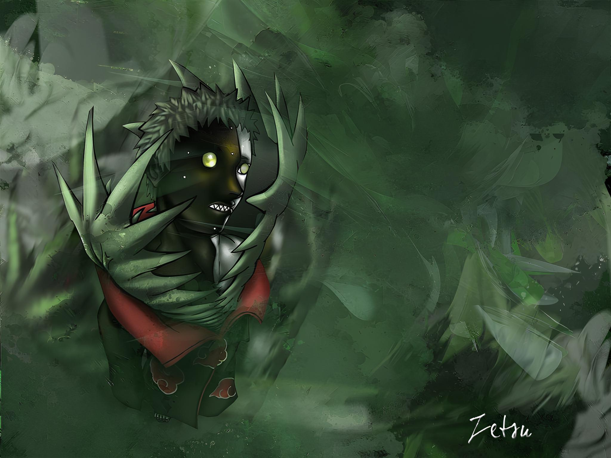
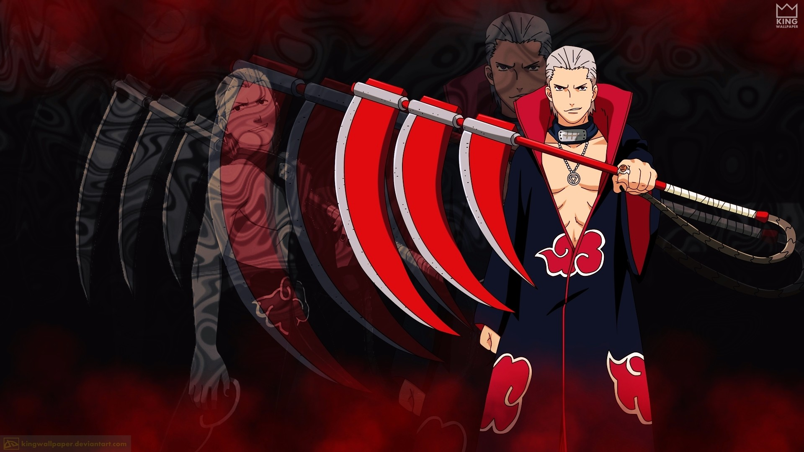
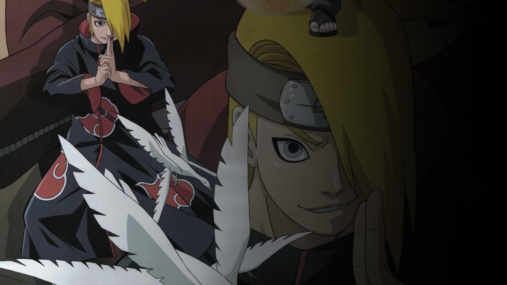
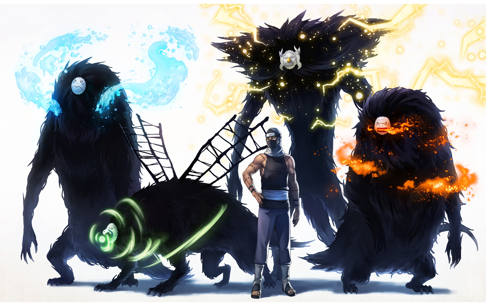
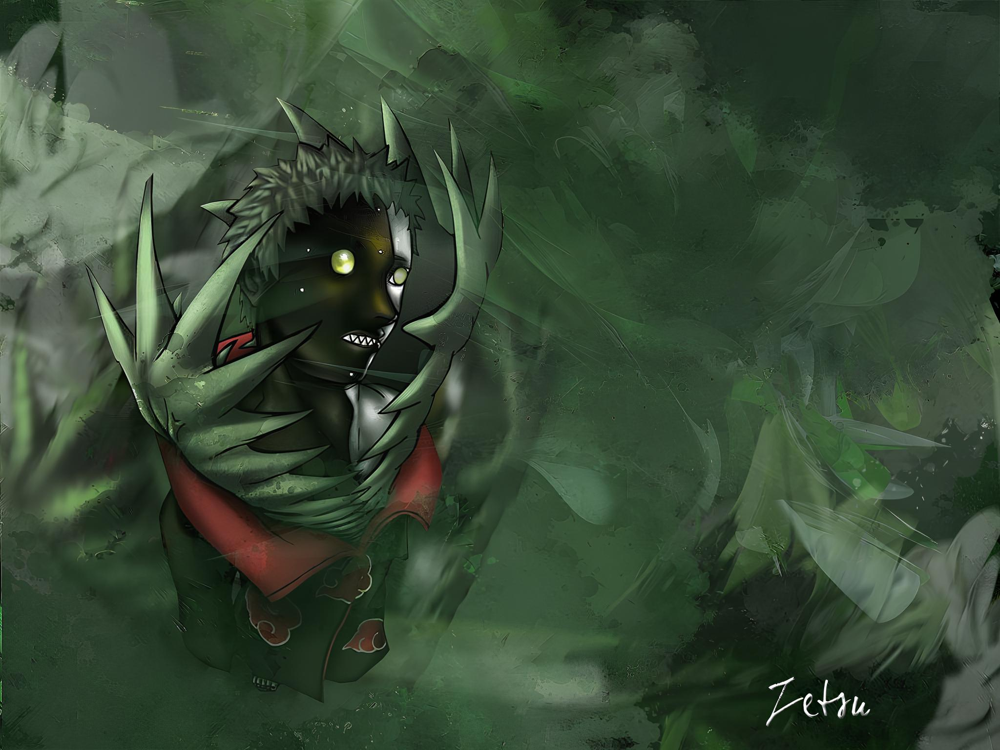
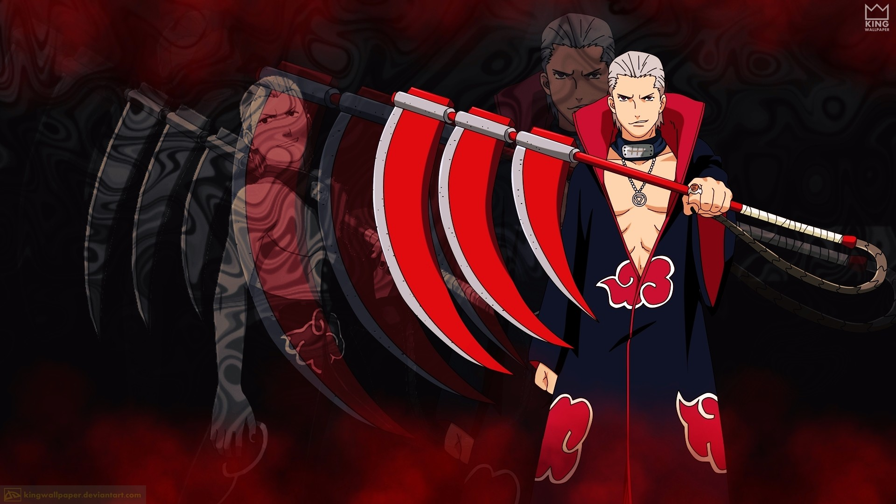
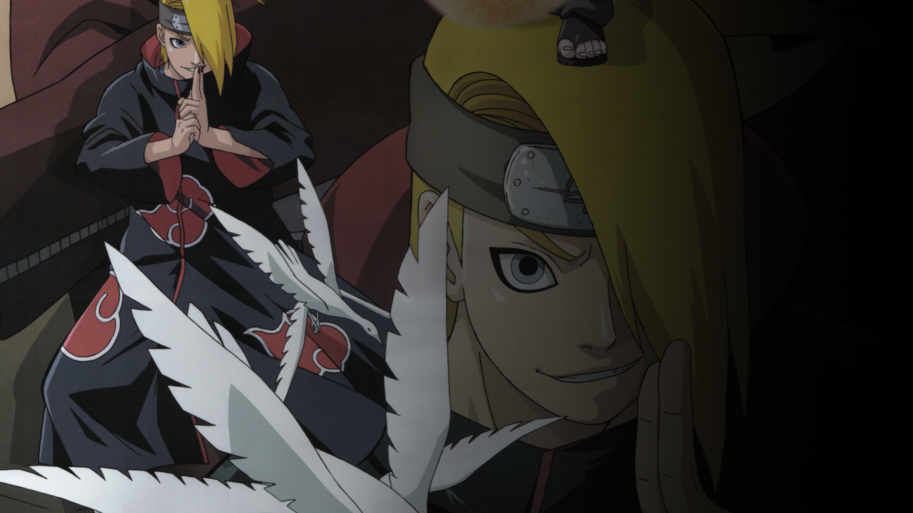
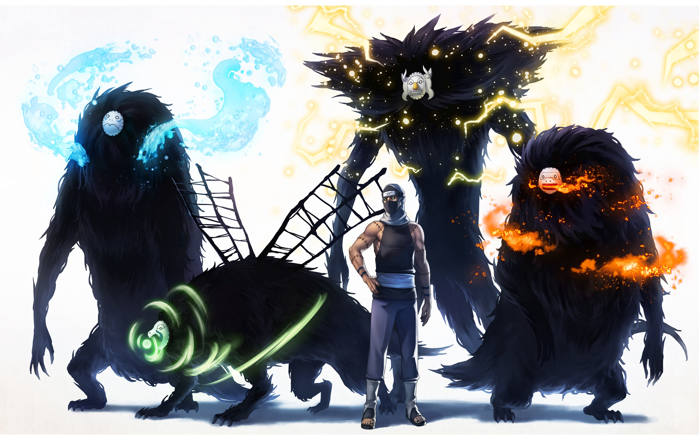
 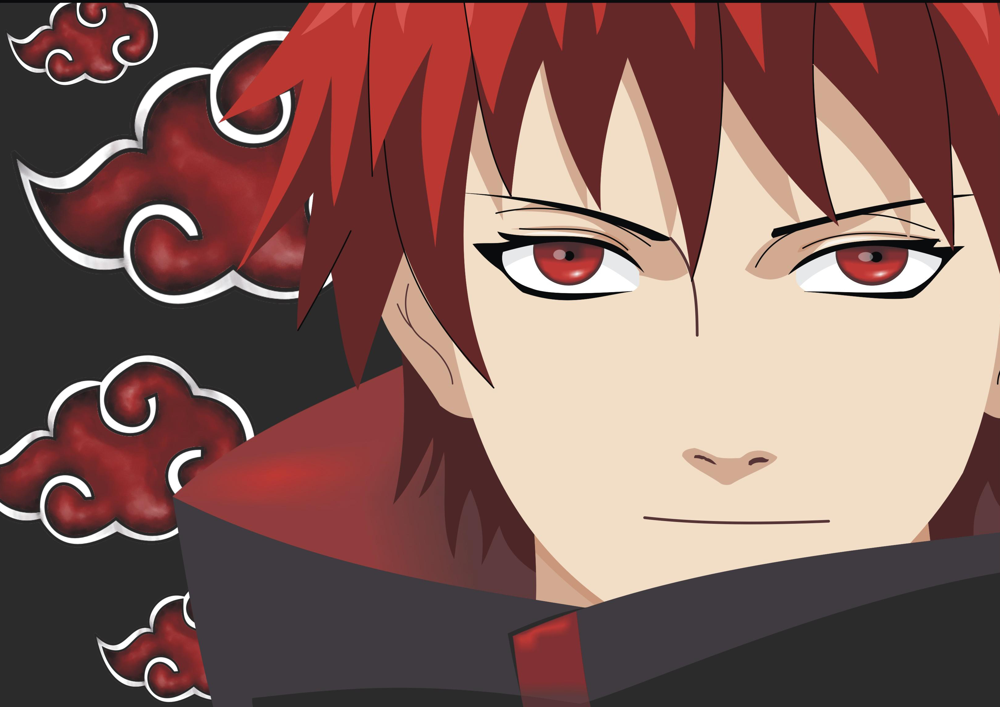
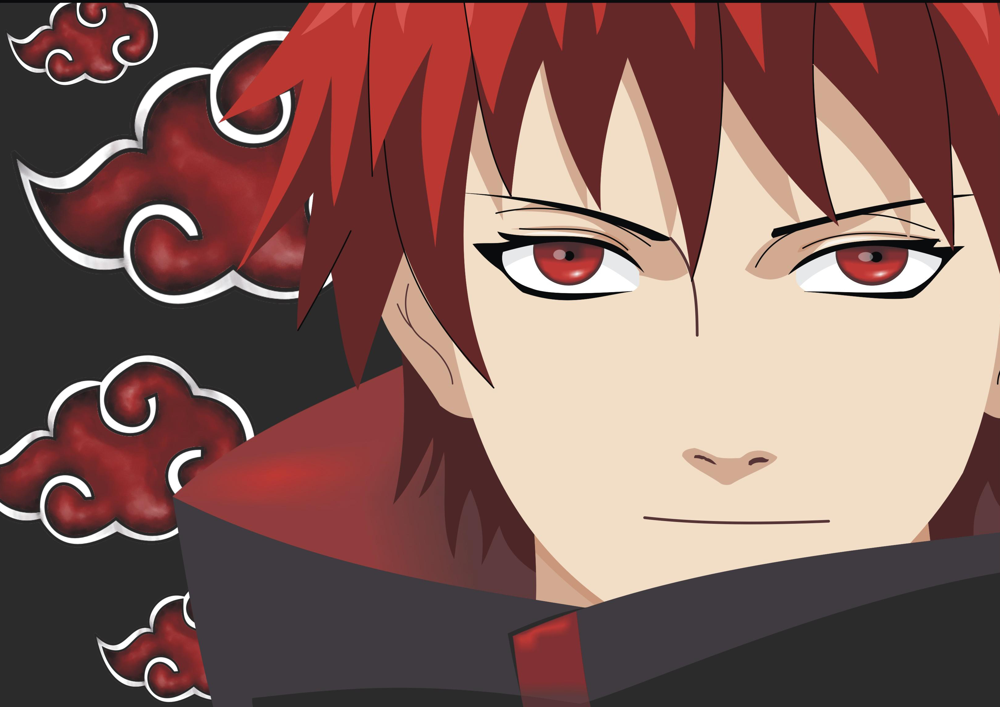
 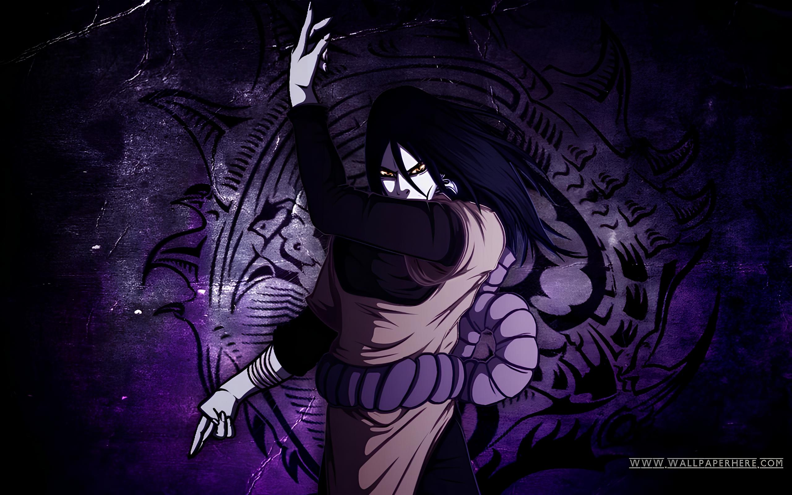
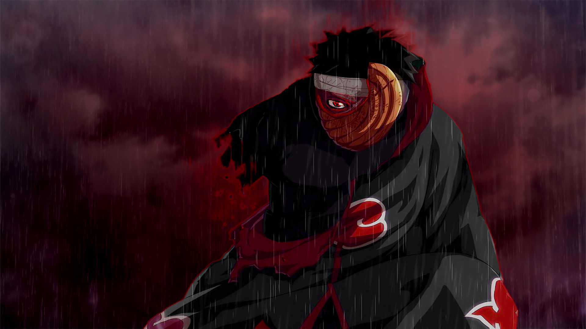
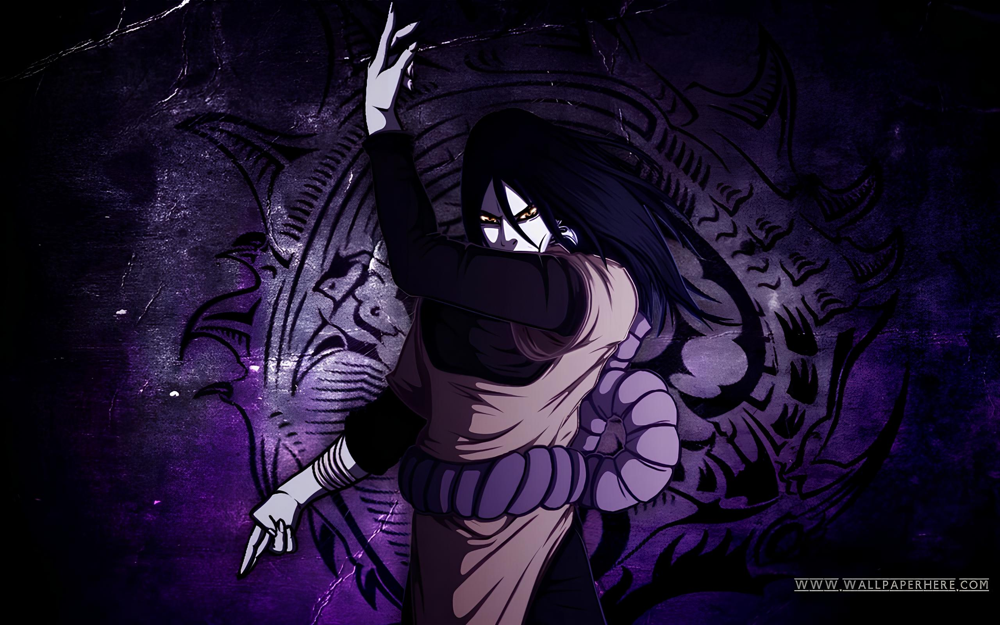
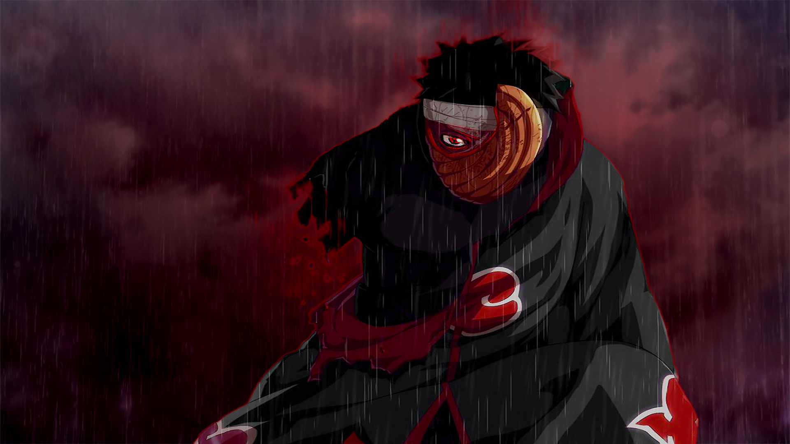
 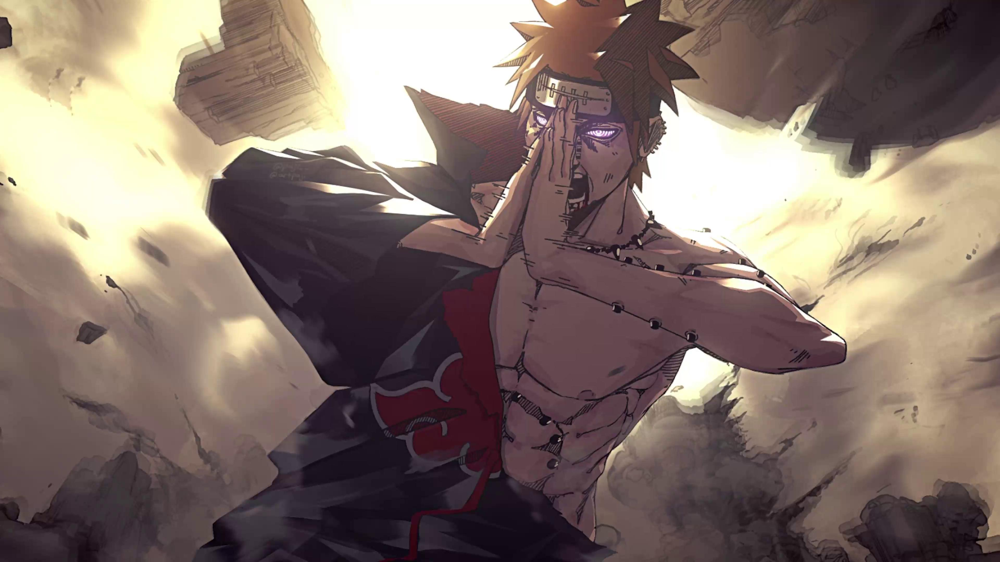
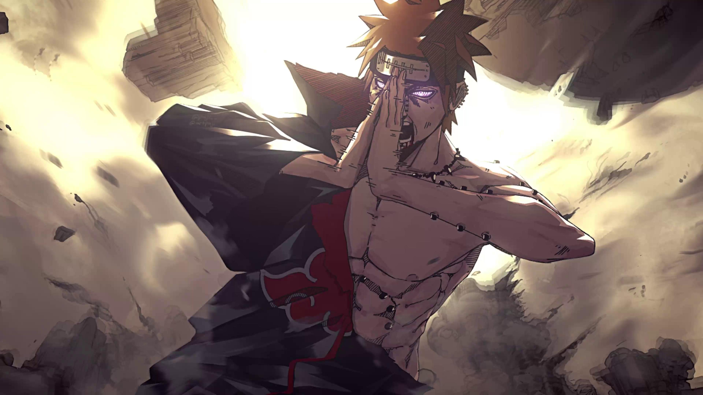
Akatsuki
É um grupo formado por shinobis renegados que trabalham como mercenários em missões secretas para alguns países ninja. Além disso, eles possuíam um objetivo próprio, que é revelado mais adiante, de capturar todos os Jinchuuriki para extrair deles as Bestas de Cauda. Nagato assume a liderança da Akatsuki e seu objetivo fica distorcido pelo ódio do rapaz pelo mundo shinobi que lhe tirou seu país, sua família e seus amigos. E pelas manipulações do Obito. Dessa forma, a Akatsuki passa a recrutar ninjas renegados e o grupo começa a trabalhar como mercenário para adquirir poder e dinheiro. O objetivo do Nagato agora é o de atingir o mundo shinobi com um massacre tão violento e incomparável que geraria medo na população e cessaria as guerras por um período de tempo. Isso funcionaria como um ciclo e esse poder seria usado no futuro novamente, causando o mesmo efeito.